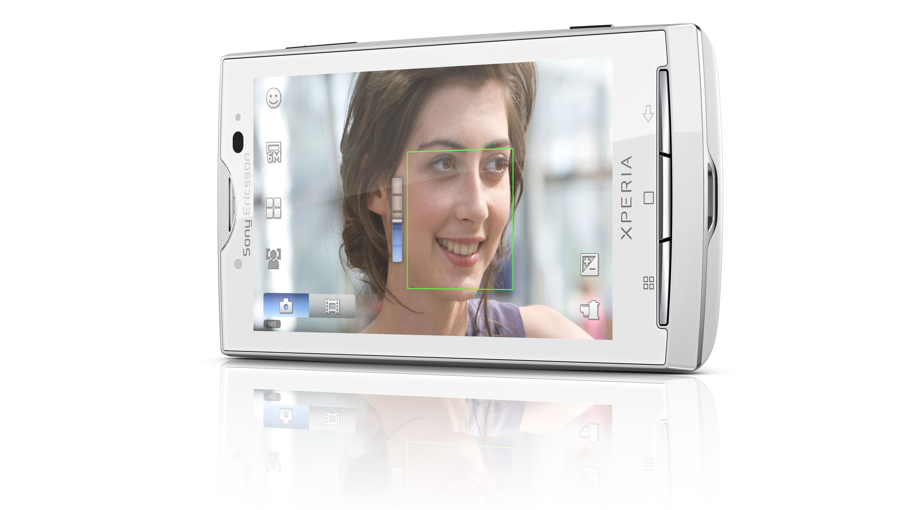

Project Overview
Smartphone camera GUI design with a photo communication theme.
Sony Ericsson Xperia X10 wiki

Responsibilities
UI design based on the concept of photo communication.
Achievements
The design was used in the X10 promotion, and it gained a 3.4% share (5th in the world) in the global smartphone market in Q2 2010.
Staff: Creative Director: Ana Areola, Director: Takahiro Kawaguchi, Designers: Masanori Matsushima / George Furuya
Tools: Adobe Photoshop / Adobe Illustrator / Adobe AfterEffects